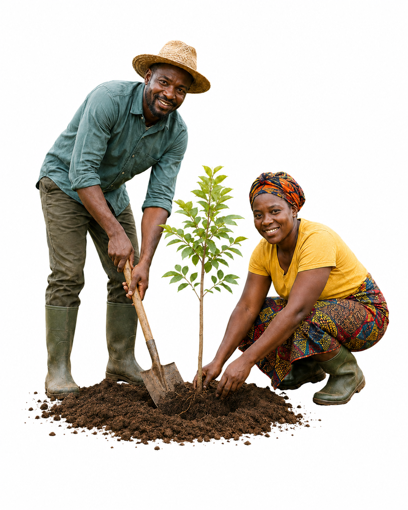

Redefining Modern Eco-Living in Nigeria.
In a world where the sound of city traffic often drowns out the whisper of trees, Exploreland Farms was born out of a simple but powerful belief that modern living and nature don’t have to exist apart. They can thrive together.
Exploreland Farms isn’t just a brand; it’s a vision for a new kind of living, one that blends nature, farming, and sustainable luxury into a single, balanced lifestyle. It’s about rediscovering the beauty of the earth and redefining what it means to live well in Nigeria today.
Rooted in the Land, Growing with Purpose
Every story has a beginning, and Exploreland Farms’ begins with the soil. From the early days, the dream was never just to own land, but to honour it. The founders saw beyond the acres of green fields and forests; they saw possibility. They saw how farming, forestry, and eco-friendly living could come together to create something extraordinary, a model for how people and the planet can grow in harmony.
At Exploreland Farms, sustainability isn’t a buzzword; it’s the heartbeat of everything. From reforestation and afforestation projects to responsible farming, every initiative reflects a promise to give back more than we take. Each tree planted and every crop harvested carries that same message; that progress doesn’t have to come at the expense of nature.
Where Farming Meets the Future
Nigeria’s lifestyle is changing. More people are seeking peace, balance, and connection; not just luxury. Exploreland Farms answers that call by weaving together the simplicity of farm life with the elegance of modern living.
Picture waking up to soft sunlight, the distant rustle of leaves, and the freshness of vegetables grown just a few yards away. This is what Exploreland Farms call eco-living; a place where comfort and consciousness exist side by side.
Through Exploreland Farms, the brand brings people closer to what they eat, where they live, and how they experience nature. Fresh vegetables, ethically raised livestock, and locally sourced produce aren’t just part of a supply chain; they’re part of a lifestyle, a way of living that respects both the earth and the people on it.
Luxury with a Soul
For Exploreland Farms, true luxury isn’t about excess; it’s about intention.
It’s about creating spaces that feel alive, homes that breathe, and environments that nourish both body and soul. Every Exploreland Farms project is built with one guiding question: How can we make the planet better while improving how people live?
This is what makes Exploreland Farms’ version of luxury so different. It’s not just beautiful, it’s meaningful. Every detail, from the materials used to the landscaping, reflects a care for the environment and a respect for the generations to come.
Building for the Future, and for People
Exploreland Farms’ story isn’t just about architecture or agriculture; it’s about people; families, communities, and dreamers who want to live better without losing touch with nature.
The brand’s vision reaches beyond buildings and farmlands. It’s about creating self-sufficient communities, empowering local farmers, and inspiring a shift in how Nigerians think about sustainability. Exploreland Farms wants eco-living to be more than a privilege; it wants it to be a principle, something everyone can aspire to.
The Exploreland Farms’ Way
To live The Exploreland Farms’ Way is to embrace a new rhythm, one where the hum of technology blends with the quiet strength of the earth. It’s about progress that heals, innovation that respects, and luxury that gives back.
At Exploreland Farms, we believe in:
- Respecting the land.
- Replenishing what we use.
- Redefining how we live.
Every project, every farm, every tree planted brings that promise to life.
Conclusion: Growing the Future, Naturally
Exploreland Farms is reimagining what it means to live modern, not by moving away from nature, but by moving closer to it. The vision is simple: a greener, cleaner, and more conscious Nigeria where people live beautifully, sustainably, and meaningfully.
Because for us, the future isn’t something to be built on top of the earth, it’s something to be grown with it.
Welcome to The Exploreland Farms’ Way.